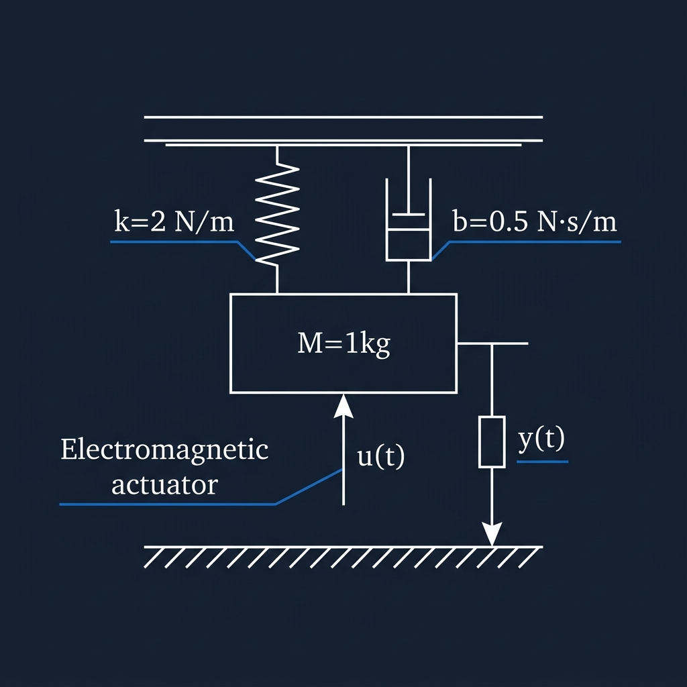

Plant Modelling & Representation
"The engineer opens a blank Crystal file. A vehicle's chassis bounces on an electromagnetic actuator. The first step: write the physics as state equations."

Physical Parameters
| Mass | M = 1 kg |
| Damping | b = 0.5 N·s/m |
| Spring | k = 2 N/m |
| Input | u(t) = actuator force |
| Output | y(t) = chassis position |
State Variables
x₁ = position (m), x₂ = velocity (m/s)
# State-Space matrices from Newton's 2nd Law a = [[0.0, 1.0], [-2.0, -0.5]].to_tensor b = [[0.0], [1.0]].to_tensor c = [[1.0, 0.0]].to_tensor # measure position only d = [[0.0]].to_tensor plant = CrySpace::StateSpace.new(a, b, c, d) # Convert to Transfer Function plant_tf = plant.to_transferfunction # Model 100ms sensor delay via Pade approximation delay_tf = CrySpace::TransferFunction.pade(0.1, 1) total_tf = plant_tf * delay_tf # series connection
Open-loop poles: −0.25 ± 1.39j (complex conjugate, lightly damped)
Stability & Canonical Realizations
"Before designing any controller, the engineer verifies controllability, observability, and checks stability via the Routh array. Then the system is transformed into its Jordan modal form to understand the natural modes."
# Algebraic stability test (no simulation) rh = total_tf.routh_hurwitz puts rh[:stable] # → true # Check structural properties plant.is_controllable? # → true plant.is_observable? # → true # Transform to modal block form sys_jcf, T = plant.to_jordan_form # Controllability canonical form sys_ccf, T2 = plant.to_control_canonical_form # Hankel Singular Values hsv = plant.hsvd
Jordan (Modal) Form A
Complex conjugate eigenvalues reveal a lightly-damped oscillatory mode — the chassis bounce frequency at ≈ 1.39 rad/s.
Frequency Domain Analysis
"The engineer sweeps from 0.1 to 50 rad/s to build a Bode plot, checks phase margin, and confirms the resonant peak near the natural frequency."
Bode Diagram — G(s) = 1 / (s² + 0.5s + 2)
Phase (degrees)
omega = [0.1, 0.3, 1.0, 3.0, 10.0, 50.0].to_tensor w, mags_db, phases = plant.bode_data(omega) gm, gm_db, pm, wgc, wpc = plant.stability_margins bw = plant.bandwidth h2n = plant.h2norm hinf = plant.hinfnorm_exact # Hamiltonian bisection
LQR State-Feedback Design
"The engineer wants optimal ride comfort — small position excursions, minimal actuator effort. The LQR cost function encodes this trade-off. The Riccati solution gives the optimal gain matrix K."
\[
\begin{bmatrix}
\dot{x}_1\\\dot{x}_2
\end{bmatrix}
=
\begin{bmatrix}
0 & 1\\
- k/M & -b/M
\end{bmatrix}
\begin{bmatrix}
x_1\\
x_2
\end{bmatrix}
+ \begin{bmatrix}
0\\
1/M
\end{bmatrix} u
\]
T
R
u
)
dt
s.t.
ẋ
=
Ax
+
Bu
# Penalise position 100× more than velocity; limit actuator power Q = [[100.0, 0.0], [0.0, 1.0]].to_tensor R = [[0.5]].to_tensor K, P, cl_poles = plant.lqr(Q, R) # K ≈ [12.28, 4.68] (position + velocity feedback) # Prefilter gain so step reference → y_ss = 1 Nbar = plant.nbar(K) # ≈ 14.28 # H2 synthesis (alternative) K_h2, _ = plant.h2syn(C_z, D_zu)
State Estimation — Kalman & Luenberger
"Only position is measured, but the LQR controller needs both position and velocity. The engineer designs two estimators: an optimal Kalman filter and a deterministic Luenberger observer placed 10× faster than the plant poles."
Observer convergence — true position vs estimated (0.5m initial error)
# LQE Kalman observer gain (optimal under noise) Q_n = [[0.5, 0.0], [0.0, 0.1]].to_tensor R_n = [[0.05]].to_tensor L = plant.lqe(Q_n, R_n) # ≈ [3.22, −0.10] # Luenberger: pole-placement for deterministic setting L2 = plant.acker_obs([-15.0, -20.0]) # Object-oriented observer instance (continuous RK4 update) obs = CrySpace::LuenbergerObserver.new(plant, L2) obs.update_continuous(y, u, dt) # propagates x̂ via RK4 obs.update_discrete(y, u) # algebraic update # Discrete Kalman Filter kf = CrySpace::KalmanFilter.new(plant_d, Q_n, R_n) kf.predict(u) kf.update(y)
Discretization Methods
"The digital controller runs at 20 Hz (dt = 0.05s). The engineer compares four discretization strategies and picks ZOH for implementation, using the Tustin pre-warped variant for digital filter design."
dt = 0.05 # 20 Hz sampling p_zoh = plant.sample(dt) p_tustin = plant.sample(dt, method: :tustin) p_prewarp = plant.sample(dt, method: :prewarped, omega_c: 5.0) p_matched = plant.sample(dt, method: :matched) # Round-trip verification plant_back = p_zoh.to_continuous # D2C matrix logarithm
A₁₁ comparison (dt = 0.05 s)
| Method | A[0,0] | Notes |
|---|---|---|
| ZOH | 0.997522 | Exact for piecewise-constant inputs |
| Tustin | 0.997534 | Preserves imaginary axis stability |
| Pre-warped | 0.997508 | Matches gain at ω_c = 5 rad/s |
| Matched | 1.970374 | Pole-zero matched (note ≥1 for this plant) |
Model Order Reduction
"The combined plant + delay model is 3rd order. For an embedded controller the engineer wants a 2nd-order approximation. Balanced Truncation retains the most input/output energy."
# 3rd-order system: plant (2nd) + sensor delay (1st) sys3 = total_tf.to_statespace # Balanced Truncation: keep 2 dominant modes sys_bt = sys3.balred(2) # DC gain: 0.50 → 0.495 sys_hn = sys3.hankel_reduction(2) # Compute balanced realisation and Gramian diagonal sys_bal, T, Ti = sys3.balreal Wc = sys_bal.gram(:c) Wo = sys_bal.gram(:o) # Minimal realisation (cancels hidden pole-zero pairs) sys_min = sys3.minreal
Balanced Gramian diagonal (σᵢ)
Wc = Wo confirms balanced realisation. σ₃ ≈ 0 → safely discarded.
DC gain preservation
Less than 1% DC gain error — the reduced model is faithfully representing the plant's steady-state behaviour.
PID Tuning & Anti-Windup
"For a simpler fallback controller the engineer applies classical PID tuning rules, then arms the controller with clamping anti-windup to handle actuator saturation at ±3 N."
# Ziegler-Nichols (ultimate gain/period method) zn = CrySpace::Tuning.pid_tune_zn( ku: 8.0, tu: 1.2, type: :pid ) # Kp=4.8, Ki=8.0, Kd=0.72 # Cohen-Coon FOPDT method cc = CrySpace::Tuning.pid_tune_cc( gp: 0.5, tau: 1.5, theta: 0.1, type: :pid ) # PID with clamping anti-windup pid = CrySpace::PIDController.new( kp: zn[:kp], ki: zn[:ki], kd: zn[:kd], tf: 0.02, u_min: -3.0, u_max: 3.0 ) u = pid.update(error, dt) # clamped output
PID Response (decreasing error trajectory)
Nonlinear Analysis — Describing Functions
"The actuator saturates at 3 N and a dead-zone exists below 0.3 N. Describing functions quantify how these nonlinearities reduce effective loop gain — critical for predicting limit cycles."
Saturation describing function gain N(A) vs input amplitude
System Identification
"Before building the model, the engineer excites the real rig with a PRBS signal, collects I/O data, and estimates the TF parameters using least-squares ARX identification. The Ho-Kalman algorithm then reconstructs a state-space model from impulse response data."
Generate PRBS excitation
CrySpace::Ident.prbs(4) → 15-sample maximal-length binary sequence
Apply chirp sweep
CrySpace::Ident.chirp(t, 0, 5, 10) → swept cosine from 0–5 Hz
Collect step-response data
Apply step at k=5, collect 40 noisy I/O samples from discretized plant
ARX least-squares identification
CrySpace::Ident.least_squares_estimation(u, y, 1, dt)
Ho-Kalman realization from impulse data
CrySpace::Ident.ho_kalman(ir, 1, 1, 1, 0.1) → A ≈ 0.85 ✓
Frequency-domain fitting
CrySpace::Ident.levy_fit(omega, resp, 0, 1) → Levy's complex curve fit
Nonlinear ODE Solvers & Adaptive Control
"Rubber bump-stops create a cubic spring nonlinearity. The engineer simulates the nonlinear system using adaptive RK45 (which automatically tightens step-size near the transient), then wraps it with MRAC to track a sinusoidal reference."
# Nonlinear spring: k_eff = k + α·x₁² (cubic stiffening) f_nl = ->(x : Float64Tensor, t : Float64) { x1, x2 = x[0].value, x[1].value [x2, -(2.0 + 0.3*x1*x1)*x1 - 0.5*x2].to_tensor } # Fixed step RK4 _, states_rk4 = CrySpace::Solver.rk4(f_nl, x0, {0.0, 1.0}, 0.05) # Adaptive step RK45 (Runge-Kutta-Fehlberg) _, states_rk45 = CrySpace::Solver.rk45(f_nl, x0, {0.0, 1.0}, tol: 1e-7) # Both agree: x₁(1.0s) ≈ 0.12945 m # Model Reference Adaptive Control xs, xm, us = CrySpace::AdaptiveNonlinear.mrac_simulate( -1.0, 2.0, -3.0, 3.0, 1.0, 1.0, r_sig, t_vec )
Closed-Loop Observer Simulation
"Finally, the full LQR + Luenberger observer loop is simulated. The observer recovers the initial estimation error in under 0.5s. The LQR drives the chassis back to rest within 2s."
Closed-loop response: true position x₁(t) vs estimated x̂₁(t)
t = Float64Tensor.linear_space(0.0, 2.0, 80) x0 = [[0.5], [0.0]].to_tensor # 0.5m displacement x0_e = [[0.0], [0.0]].to_tensor # observer cold start t_out, x, x_hat, y, u = plant.simulate_observer( t, K, L_lbg, x0: x0, x0_est: x0_e ) # Step response metrics info = plant.feedback([[1.0]].to_tensor).stepinfo(n_steps: 200) # Rise time: 0.7s, Settling: 16.6s, Overshoot: 63.8%
Interactive HTML Dashboard Generation
"The engineer generates two browser-ready Chart.js dashboards with a single method call — zero dependencies, fully self-contained HTML files that can be shared with the team."
# Both methods work on StateSpace and TransferFunction plant.step_plot("suspension_step.html") plant.bode_plot("suspension_bode.html") # Transfer function version plant_tf.step_plot("tf_step.html") plant_tf.bode_plot("tf_bode.html")